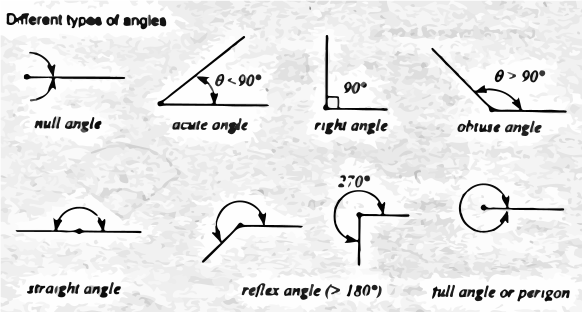
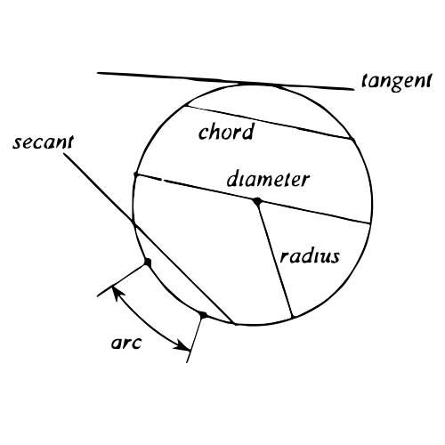
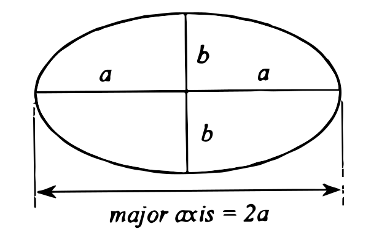
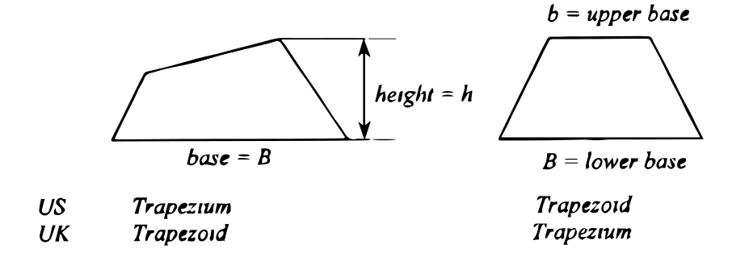
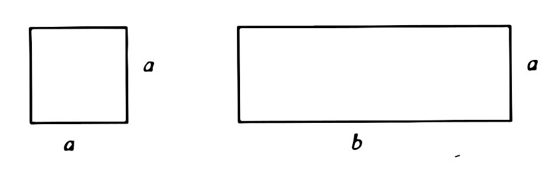
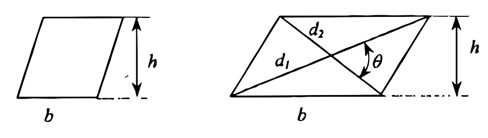

The term "geometry" was derived from the Greek words, "ge" meaning earth and "metria" meaning measurement. Euclid (c. 330 - c 275 B.C.) in his best known book in geometry "Elements" give more emphasis on Plane geometry which concerns with geometric figures constructed on a plane surface or geometrical shape of two dimensions (i.e angle, triangle, conic section, etc.). Archimedes (287-212 B.C.) contributed so much to Solid geometry which concerns with three dimensional geometric figures such as cylinder, sphere, pyramid, angle between planes, etc. Descriptive geometry, developed by Ptolemy deals with the application of geometry to astronomy.
Angle is formed by two rays which extend from a common point called vertex.

Adjacent angles are two angles with a leg in common.
Complementary angles are two angles whose sum is a right angle (90$^\circ$).
Supplementary angles are two angles whose sum is a straight angle (180$^\circ$).
Vertical angles are angles formed by two intersecting lines. Vertifcal angles are equal.
Circle is a plane figure that is a locus of all points in the plane equidistant from a given point, the center of the circle.
Circumference is the length of the perimeter of a circle.
Sector is bounded by two radii and an included arc.
Segment is bounded by a chord and the arc subtending the chord.

Area of a circle
$$A = \pi {r^2}\ \ \ \ \ \ \ \text{or}\ \ \ \ \ \ \ A = {\pi \over 4}{d^2}$$
where:
r = radius
d = diameter
Circumference of a circle:
$$C = 2\pi r \ \ \ \ \ \ \ \text{or}\ \ \ \ \ \ \ C = \pi d$$
Area of sector:
$$A = {1 \over 2}rc = {1 \over 2}{r^2}\theta $$
where: $\theta$ is in radian
$$A = {{\pi {r^2}\theta } \over {360}}$$
where: $\theta$ is in degrees
Area of segment:
$$A=\text{Area of sector}-\text{Area of triangle}$$
Ellipse is a locus of a point which moves so that the sum of its distances to the fixed points (foci) is constant and is equal to the length of the major axis.
Area of an ellipse:
$$A = \pi ab$$
where:
a = semi-major axis
b = semi-minor axis

Polygons is a closed plane figure with three or more angles. There are as many sides as angles in a polygon. The term "polygon" comes from Greek words "poly" meaning many and "gonia" meaning angle. Polygons are named according to the number of sides or vertices:
| Number of sides | Name |
| 3 | Triangle |
| 4 | Quadrilateral or Tetragon |
| 5 | Pentagon |
| 6 | Hexagon |
| 7 | Heptagon |
| 8 | Octagon |
| 9 | Nonagon |
| 10 | Decagon |
| 11 | Undecagon |
| 12 | Dodecagon |
| 1000 | Chiliagon |
| n | n-gon |
Regular polygon is a polygon having all sides equal and all interior angles equal.
Convex polygon is a polygon having each interior angle less than 180$^\circ$.
Concave polygon is a polygon having one interior angle greater than 180$^\circ$.
Diagonal is a line that connects two non-adjacent vertices.
Number of diagonals of a given polygon:
$$\text{Diagonals} = {n \over 2}(n - 3)$$
Sum of interior angles:
$$S = (n - 2){180^ \circ }$$
where: n = number of sides of the polygon
Triangle is a polygon with three sides. If three sides of a triangle are equal, it is an equilateral triangle. An equilateral triangle is also equiangular. If two sides are equal, it is an isosceles triangles. Scalene triangle is a triangle with no two sides equal.
Acute triangle is triangle with all interior angles less than right triangle (90$^\circ$). If one of the interior angles is greater than 90$^\circ$, it is regarded as obtuse triangle. If one interior angle is exactly 90$^\circ$. it is a right triangle.
Egyptian triangle is a right triangle with sides equivalent to 3, 4 and 5 units.
Note: For the formulas for area of a triangle, refer to Trigonometry.
A quadrilateral (also known as quadrangle or tetragon) is a polygon with four sides.
In the U.S. standard, a quadrilateral with two sides parallel is called as trapezoid and trapezium if no two sides are parallel. It is opposite in the United Kingdom, where it is referred to as trapezium if two sides are parallel and trapezoid if no two sides are parallel.

Area of trapezoid:
$$A = {1 \over 2}(B + b)h$$
A parallelogram is a quadrilateral with both pairs of opposite sides are parallel. A right-angled parallelogram is called a rectangle. A square is a rectangle with all four sides equal.

Area of square: $A={a^2}$
Area of rectangle: $A=ab$
Rhomboid is a parallelogram whose adjacent sides are not equal while rhombus is a rhomboid with all sides equal.

Area of rhombus: $A = bh = {1 \over 2}{d_1}{d_2}$
Area of rhomboid: $A = bh = {1 \over 2}{d_1}{d_2}\sin \theta $
where: d1 and d2 = diagonals
In the case of a rhombus, the value of $\theta={90^\circ}$.